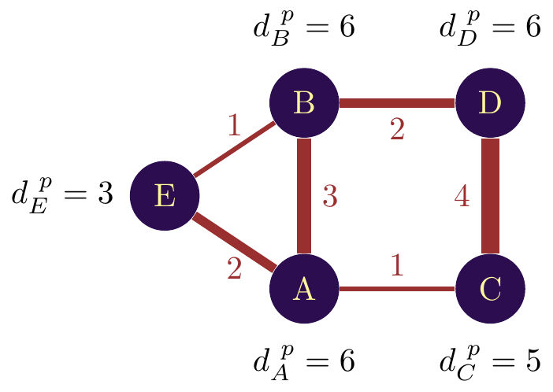
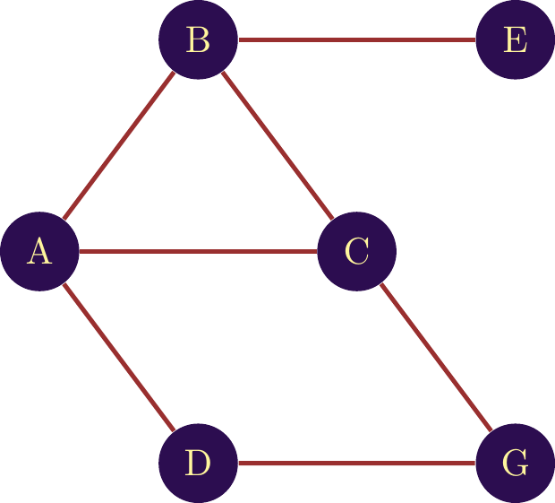
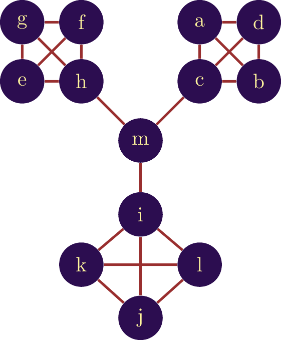
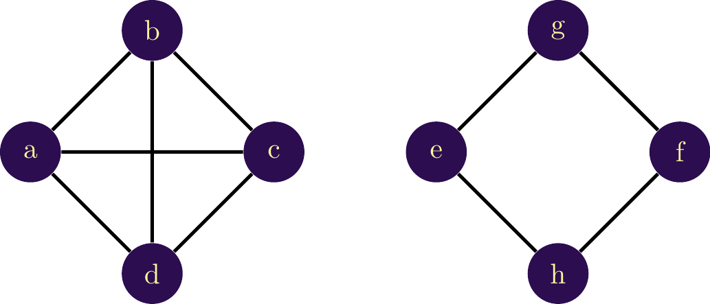

The basics of Network Analysis
Introduction
We are familiar with the statistical processing of object data (sum, mean, variance, histograms, etc.). However, there is a different kind of data with a high informational value: relational data. We are referring here to data that indicates a relationship, e.g a collaborative relationship, a citation link, a financial investment, a social link, etc. Relational data is rich in information. Relational data show their informational richness with different tools and methods. In fact, in relational data we’re mainly interested in the structure of these relationships and the role that entities play in this structure. This idea is illustrated in Figure 1.
The bar chart shows the frequency of patent technology classifications in a portfolio. The diagram provides information on the fields in which players seek to protect their inventions. Code B60C1/00 corresponds to “Tires characterized by chemical composition”, code C08K003/04 corresponds to “Use of inorganic substances as adjuvants” and so on. The network is generated by connecting two classifications present on the same patent. Each node in this network is therefore a classification, and each link indicates that both classifications were observed on the same patent.
The network representation of these classifications enables us to learn more about the combination of classifications. We can see which classifications are often combined, which are never combined, which play a central role, and so on. What interests us in networks is the structure. Analyzing structure allows us to quantify which nodes group together in communities, which nodes are central, which nodes connect different parts of the network (or clusters) and much more.
However, to get the most out of this data, we need specific metrics and methods. These tools fall into a field known as Social Network Analysis (SNA). The name is misleading, coming from the pioneering methods that began work on social systems analysis. The methods have subsequently been employed in every field of science, but the name hasn’t really changed.
Whatever the data source, the methods and indicators are the same. Interpretation, however, depends on the data: a co-classification link, a shareholding, a citation or a collaboration are not interpreted in the same way. And even between the same types of data, interpretation can differ. For example, a collaboration link in a project funded by the French National Research Agency (ANR) is not interpreted in the same way as a collaboration link in a European project. It is therefore essential to understand both the theory (indicators and methods) associated with SNA and the origin of the data. To this end, this manual has a dual objective. The first is to present the theoretical aspects of network analysis. The second is to present use cases mobilizing different data sources. These cases are divided into three parts:
- Present the origin of the data, how to interpret the data
- Present how the network was generated (what information was mobilized, what clean-ups were carried out, etc.).
- Analysis of the network with an interpretation in line with the use case and the data mobilized.
Particular attention is paid to the explanation of citation analysis in patents, and textual analysis, which present a higher level of complexity than other data sources.
This manual is aimed at Masters students and intelligence professionals who wish to include network analysis in their toolbox.
Theory - Network Analysis
In its most basic form, a network is an object based on a set of nodes and links. The nature of the nodes and links is unlimited. A network can be created from any type of object with an interaction link. Network analysis can be applied to the analysis of social interactions: social interactions between cows, interactions between brain areas, equity investment links between firms, financial exposures between banks, collaborations between firms, links between criminals - the list goes on.
Figure 2 shows the construction of a network in its simplest form. Objects are represented by circles we call “nodes” and interactions by connections we call “links”. The network here shows object 1 interacting with object 2. This could be two researchers co-authoring a paper, two firms collaborating on a project, etc.
Warning
A network is the sum of the objects and interconnections between these objects.
The concept is relatively simple, and we may be tempted to create networks from any kind of data. In order to avoid errors and misinterpretations, it is important to be able to identify the type of network we are creating and how this impacts on the validity or choice of indicators for analysis. In this section, we present the different types of networks and introduce a few vocabulary elements that will serve as a basis for the cases applied in the following.
The network types
The undirected, or bilateral, network
In the simplest cases, an interaction between two objects can go either way. Suppose a collaborative link between two researchers: if \(\textit{A}\) collaborates with \(\textit{B}\), then \(\textit{B}\) collaborates with \(\textit{A}\). Another example is a network of criminals, a network based on participants in conferences or projects.
If the interaction between objects takes place in both directions, we speak of a \(\textbf{nondirected}\) network. Classically, this type of interaction is represented by a line without arrows between objects. Figure \(\ref{nw_simple_nondirected}\) gives an example of this type of network.


It is possible to quantify the link between objects, in which case we speak of a weighted network. If we take the example of a collaboration network, a collaboration link can be weighted by the number of collaborations between two actors. The number is then associated as a weight on the link and can be visualized by a different link thickness. In figure \(\ref{nw_simple_non_dirige_pondere}\) we have the same structure, but different weights on the links. The weights are visualized by the link thickness and by the number displayed next to the links. It is often important to associate this type of information, both for the relevance of the calculation of certain indicators, and for visualization purposes. The latter makes it easier to see the structure of interactions between objects, and quickly identifies the densest areas of the network.
It’s possible to observe a link in a network that points from a node to itself. This is called a \(\textbf{loop}\) and is represented in figure \(\ref{nw_simple_non_dirige_pondere}\) by a red broken line. Let’s assume that each node in the illustrated network represents a country, and each link represents collaboration between players in the territory. The network shows us that two actors from country \(\textit{A}\) collaborate with actors from country \(\textit{C}\). In this context, the loop indicates that actors in country \(\textit{C}\) are also working together.
The directed, or unilateral, network
When the interaction goes from one node to another, the network is \(\textbf{directed}\). A financial transaction is directed from one account to another. Quotations are another example: a document quoting a pre-existing document. So is the infection of one person by another. The virus spreads from the infected individual to the healthy one. The direction must be unilateral for the network to be considered directed. Figure \(\ref{nw_simple_dirige}\) shows an example of a directed network. By convention, to indicate the direction of interaction, the link is represented by an arrow.


In this illustration, the node \(\textit{A}\) interacts with three other nodes, with varying intensity. However, no node interacts with it. Node \(\textit{B}\), on the other hand, both receives and gives interactions (with node \(\textit{C}\)). Suppose we’re dealing with a financial network in which each node is a bank account held by an individual. In this case, node $textit{A}$ sends money to three other individuals, sending the largest amount (3 units) to node \(\textit{B}\). The latter receives money from two individuals and sends money to individual \(\textit{C}\).
The fact that a network is directed does not prevent two-way interaction. The difference with an undirected (or bilateral) network is that this interaction is split into two directed interactions. In figure \(\ref{nw_simple_directed_loop}\) this is visualized between nodes \(\textit{D}\) and \(\text{E}\) by two red directed links. It is therefore possible that the weight of the link from \(\textit{D}\) to \(\textit{E}\) is different from the weight of \(\textit{E}\) to \(\textit{D}\). In an undirected network, the weight is unique.
As in an undirected network, a loop on a node is possible, with the difference that this loop is directed.
Multiple types of nodes: The bi-modal, or bipartite, network.
It is possible to create a network containing different types of objects. Suppose we want to analyze the career of inventors by mapping the companies they have worked for. This implies having two types of nodes: inventors and companies. When two types of nodes are interconnected in the same network, this network is called a \(\textit{bi-modal}\) network.

An example is given in figure \(\ref{Reseau_bimodal}\). We have three inventors and two companies. Two inventors are common to both companies, and one inventor is specific to one company. It’s important to note that in this type of network, there is no direct link between companies or inventors. Indeed, a link between inventors would represent a different type of link: the network would no longer be solely bi-modal, but would also be a multi-graph (network with more types of links, see \(\ref{muli_graph}\)). In the network represented here, we have only one type of link: the company membership link.
However, it is possible to transform a bi-modal network into a uni-modal one. The idea is to create a link between two inventors who have belonged to the same companies, and to create a link between two companies that have employed the same inventor. The nature of the link changes, but we’re trying to show the same thing. In figure \(\ref{Reseau_bimodal_ecalte}\) the transformation is visualized.

The first network is a simple link between the two firms, with a weight of two because they have employed two inventors in common. The second network is composed solely of inventors. Here, the blue inventor has one firm in common with the orange inventor, and the orange inventor has two firms in common with the grey inventor.
This type of transformation facilitates analysis and, above all, the calculation of indicators that are more complex to calculate in an n-modal network.
The Multigraphe
Let’s suppose we want to represent different types of interaction in the same network. This translates into the possible existence of two (or more) links between two objects in the same network. Figure \(\ref{Network_two_types_of_links}\) visualizes this idea with two links between nodes \(\textit{C}\) and \(\textit{D}\). The first link is shown in black, the second in red. A network containing different types of links is called a \(\textbf{multi-graph}\).
As with any network, it can be analyzed visually or by calculating indicators. In the particular case of a multigraph, the vast majority of indicators would be false (or incalculable) if two types of link co-existed. We must therefore be careful with multigraphs. While a visual analysis can be carried out without too many constraints, an analysis using indicators requires vigilance with regard to the indicators calculated (check in the software that the indicators take into account the different links). Indeed, if the software doesn’t distinguish between them, each link will be treated as identical, undermining the additional informational value of the multigraph.

Let’s assume that the nodes in this network are companies, with black links representing collaborative links in patents, and red links representing collaborations in these scientific publications. We can read in this network that firm \(\textit{A}\) has co-authored a paper with firms \(\textit{E}\) and \(\textit{B}\) but has co-filed a patent with firm \(\textit{C}\). Although these are collaborative links in both cases, the implications are not at all the same. A collaborative link in patents implies an intellectual property parte, whereas publication shows above all a fundamental research activity between the two entities. A visual analysis here is interesting and relevant. However, the calculation of classic indicators would be wrong, as it considers both types of link to be identical. To overcome this problem, it is possible to create two networks from the first, each with only one type of link. The alternative relies on the use of more complex indicators, which are far more difficult to interpret and limit the impact these analyses can have on decision-making.
More effective than the multigraph are multiplex networks and interconnected networks, which we will describe in detail below.
Muli-layered Networks
A different approach to multigraphs and bi-modal graphs is to consider each typology of links or nodes as a specific network, and to create links between networks. There are two types of multi-layer network, the multiplex network and the interconnected network.
A different approach to the multigraph is to consider each link typology in a specific network and create links between networks. For example, in the network shown in figure \(\ref{nw_multiplex}\) we have two networks represented simultaneously. Each network is also called layer here, referring to the idea that each layer handles a particular interaction [@kivela2014multilayer]. Thus, links connecting nodes in the same network are called intra-layer links. In this type of network, links between layers (inter-layer) exist only to notify the presence of the same node in different layers of the network [@sole2013spectral].
We can thus imagine co-patenting in a first layer and co-publishing in a second layer. Visualizing this type of network is possible for small networks, but quickly becomes unmanageable for larger ones. For the latter, a layered network remains the best solution. To calculate indicators, a multiplex network is possible, provided the software can handle them (R, Python, networkX).

Unlike multi-layer networks, which assign a layer to each type of interaction, the interconnected network considers one object per layer. For example, the first network may consist of all interactions in a given region, the second network a different region. As a result, inter-layer links can be made between different nodes, unlike in a multiplex network. For example, in the network shown in figure \(\ref{nw_interconnected}\), company A in region 1 collaborates with company B in region 2.

Both the multiplex and the interconnected network require specific algorithms for calculating indicators, and few software packages are able to manage this type of network.
Paths, distance and loops
The analysis of connections between nodes often raises the question of distance. A node that is close to all the nodes in the network is, a priori, an important node. Many centrality indicators are based on notions of distance between a node and other nodes in the network. By the same token, to judge the size of a network, we’d like to know the distance separating the most outlying nodes. In other cases, it may be important to know whether it’s simply possible to navigate from one node to another in a network.
To answer these questions, we first need to introduce the notion of “path”.
The path
In network analysis, a is a sequence of nodes through which you must pass to reach a given node from a given node. Suppose we’re looking for a path between node and node in the network shown in figure \(\ref{Notion_de_chemin_bilat}\). As the network is undirected, we can take the direction of the link as we wish. Thus, we start from node to node , then continue from node to node . The path connecting nodes G and A is therefore G, F, A.
If the network is directed, a path follows the direction of the links. So, in figure \(\ref{Notion_of_path_unilat}\), the only path between and is A \(\mapsto\) D \(\mapsto\) E \(\mapsto\) B \(\mapsto\) C. Since the link between A and B is in the opposite direction, we cannot go from A to B directly.


In both examples, the path between the two nodes is unique. However, several paths can coexist. The more nodes and links a network contains, the greater the number of paths. A key factor in differentiating these paths will then be their length, or the separating the nodes.
The distance between two nodes is given by the length of the path separating two nodes. The length is then given by the number of links separating the two nodes. For example, in figure two different paths are given to connect nodes G and C. The first path, in figure \(\ref{notion_distance_bi}\) has a length of 4, giving a distance of 4 between the two nodes. The second path in figure \(\ref{notion_distance_uni}\) has a distance of 6, giving a distance of 6 between G and C. Both distances and paths are valid, but we’ll often use the . This is calculated by identifying all possible paths between two nodes and retaining the shortest distance.


In the case where no path exists between two nodes, by convention, we consider the distance between the two nodes to be \(\infty\)..
A special case of a path is the . A loop is a path leading from a node to itself. In figure \(\ref{Notion_loop}\), a loop is shown in a directed network and in an undirected network. Loops can be problematic in some cases when we want to calculate distances or identify paths. For example, to calculate the distance between A and C, a correct path would be:
A \(\mapsto\) D \(\mapsto\) E \(\mapsto\) B \(\mapsto\) A \(\mapsto\) D \(\mapsto\) E \(\mapsto\) B \(\mapsto\) C
Theoretically, there are an infinite number of paths between A and C, as we could include the loop A - D - E - B - A an infinite number of times. In some cases, software will require an acyclic network, which implies a loop-free network, to enable algorithms to run.


Network indicators
The degree
In this section, we’ll start by presenting a number of indicators. Initially, we’ll focus on indicators at node level.
In order to illustrate the different indicators, we will mobilize a network extracted from real data. This is a collaborative network extracted from research projects funded by the French National Research Agency around 5G technologies. The network is given in figure 3.
When analyzing a network, the first valuable piece of information is the number of connections for each node. This provides a measure of the number of collaborators (or number of citations, investors, co-authors, etc.). This indicator is called the .
Definition: degree
The degree of a node is the number of nodes it connects to. We can measure the degree by counting the number of links.
In the example of the network in figure \(\ref{fig_ind_degree}\), node E has two connections (with and ), so its degree is 2. We then note \(d_E = 2\). The nodes and have a degree of 2, and a degree of 3.

If we calculate the degrees of the network nodes in 1 we can visualize the degree by a color gradient. In 1 we visualize the degree of the nodes by a green gradient. The darker the color, the higher the degree.
The degree visualization shows that some nodes, even if central, have a relatively low degree (ETIS, IRCICA). Orange has the highest degree, and therefore the largest number of employees, followed by the Institut Mines Telecom (which is more off-center).
The degree is a simple but effective measure for differentiating the positioning of nodes in a network.
The Degree in a directed network
If the network we’re analyzing is a directed one, we need to take into account the direction of interaction. A node can have both incoming and outgoing links. It therefore seems natural to propose two degrees in a directed network.
Definition: in-degree
The in-degree of a node corresponds to the number of links pointing to the node.
Definition: out-degree
The in-degree of a node corresponds to the number of links originating from the node, pointing to other nodes.
For example, in figure \(\ref{Reseau_degre_dirige}\), the incoming degree of node is \(2\), since two links point to it. Since no links point to other nodes from \(E\), its outgoing degree is \(0\). The logic is therefore the same as for the classic degree, with the only difference being the directions.

Degree in a weighted network
The weights of interactions can be included in the degree calculation, so we speak of . The latter is obtained by summing the weights of the node’s links. For example, in Figure 1, node E has two links, one with a weight of 1 and one with a weight of 2. The weighted degree of node E is therefore 3.

Centrality measures
One of the aims of network analysis is to identify nodes with an important position in the network structure. Important can be defined in different ways: in the case of degree, it’s the number of links, but we can also look at things in a more structural way. If we take the network shown in figure , it’s clear that the position of Orange and CEA differ. The role of these two players is therefore different from a structural point of view. Orange has a more position than CEA. Intuitively, we can consider that the centrality of a node is linked to its importance in a network, as it reflects a higher level of interconnectivity than a node positioned more on the periphery. In other words, the smaller the distance between a node and all the other nodes in the network, the more central the node is in the network.
The idea of centrality is reflected in various indicators that measure the centrality of a node with a slightly different objective. We’ll introduce some of these indicators below.
Betweenness Centrality
A first vision of centrality is given in terms of flows in the network. Let’s suppose that the network represents interactions between individuals, and that a virus is circulating between them. A person on the periphery of the network is less likely to receive the virus, as it has to pass through a large number of nodes before reaching him or her. A central player is located on a large number of paths, exposing him to a greater risk of the virus reaching him before it reaches the entire network.
If we return to our collaboration network, we can consider that collaboration involves the exchange of ideas and information. These elements pass from node to node (possibly degrading or enriching themselves) in order to spread throughout the entire network. In the context of R&D, the pooling of the knowledge of different players can result in innovation. The logic then is that the position of a node is important if it is able to capture the information flows passing through the network.
To measure the importance of a node from a flow capture point of view, we’re going to identify the number of on which a node is positioned. More precisely, we’ll identify the number of shortest paths between each pair of nodes, and how many of them a given node is positioned on.
Formally, the betweenness centrality is computed by:\
Betweennes Centrality formula:
\[\begin{equation}
BC = \sum_{k \neq j, i \in \{k,j\}} \frac{\frac{P_i(kj)}{P(kj)}}{\frac{(n-1)\cdot(n-2)}{2}}\\
\end{equation}\]
The nominator calculates the number of paths between nodes \(k\) and \(j\) (\(P(kj)\)) and the number of paths between \(k\) and \(j\) on which node \(i\) is positioned (\(P_i(kj)\)). The ratio therefore gives the fraction of paths between \(k\) and \(j\) on which \(i\) is positioned.
The denominator is there to normalize the value for the size of the network. Betweenness Centrality therefore has a value between 0 and 1, the higher the value, the more central the node. This indicator was proposed by [@Freeman77].
Example
Let’s take an example of calculation using the network in Figure 2.

Let’s calculate the BC of node \(C\). We need to start by identifying the shortest paths between all the nodes and then count how many of these paths node \(C\) is positioned on. In the table \(\ref{table_example_BC}\), the first column lists each pair of nodes. There’s only one path between \(A\) and \(B\) (\(A \mapsto C \mapsto B\)). There is therefore a single shortest path (\(P(AB) = 1\)) and node \(C\) is positioned on this path (\(P_C(AB)\)). This calculation is repeated for every other pair of nodes as shown in the table below:
| Link | Number of shortest paths with C \(P_i(kj)\) | Number of shortest paths \(P(kj)\) |
|---|---|---|
| A-B | 1 | 1 |
| A-J | 1 | 1 |
| B-J | 1 | 1 |
| A-G | 1 | 1 |
| B-G | 1 | 1 |
| B-I | 1 | 1 |
| A-I | 1 | 1 |
| B-H | 1 | 1 |
| A-H | 1 | 1 |
The final centrality score of node \(C\) is given by:
\[\begin{equation} BC_C = \frac{1+1+1+1+1+1+1+1+1}{\frac{(n-1)\cdot(n-2)}{2}} = \frac{9}{15} = 0.6 \end{equation}\]if we apply this calculation to the collaboration network, and color the nodes according to the betweenness centrality score, we obtain the network in Figure 1.
This centrality indicator highlights a number of players, notably Orange, CEA and ITM, with high centrality. The CEA, which is located on the periphery, positions itself on short paths by connecting to more central players, reducing the distance between itself and the other players in the network.
The BC thus makes it possible to identify players who act as links between different parts of the network. The CEA, for example, is the only actor linking the actors to its left with the rest of the network. As such, it controls the flow of information between these two parts of the network. This position is called . The BC makes it easier to identify actors with this particular (and valuable) position.
Closeness Centrality
In contrast to BC, we can also consider a node to be important in a network when it is able to disseminate information rapidly throughout the network. For this reason, the indicator is called Closeness Centrality (CC) and was proposed by Mark Newman ([@newman2005measure]). Instead of considering that a node is central because it receives a lot of information, we’ll consider that a node is central when it can quickly reach the other nodes. Once again, the concepts of distance and path are used here. The idea and calculation are similar to those of BC.
In mathematical terms, the Closeness Centrality is measured as follows:\ \[\begin{equation} CC_i = \frac{1}{avg(L(n,m)} \end{equation}\]
With \(L(n,m)\) the distance of the shortest path between \(n\) and \(m\).\

Let’s compare the Closeness Centrality of nodes \(C\) and \(D\) in figure \(\ref{nw_example_CC}\). We need the shortest distance between \(C\) and all other nodes. For nodes \(C\) we get:
- C-A Shortest path at a distance of 1
- C-B Shortest path at a distance of 1
- C-C The path from the node to itself is not taken into account
- C-D Shortest path at a distance of 2
- C-E Shortest path at a distance of 2
- C-F Shortest path at a distance of 1
For node \(D\) we have:
- D-A Shortest path at a distance of 1
- D-B Shortest path at a distance of 2
- D-C Shortest path at a distance of 2
- D-D The path from the node to itself is not taken into account
- D-E Shortest path at a distance of 3
- D-F Shortest path at a distance of 1
So node \(C\) has a more central position in the network than node \(D\). From an information dissemination point of view, node \(C\) has a more important position than node \(D\).
By calculating the CC in the ANR project network and coloring the nodes according to CC, we obtain the network shown in figure \(\ref{Reseau_fil_rouge_CC}\). Closeness Centrality identifies actors other than the BC. Nodes with the highest BC have a lower CC. Nodes in a dense community tend to have a higher score, as they reach their neighbors in a very empty space. We also identify nodes at the heart of the network that have a more important position from a broadcasting point of view, notably CNES and Parrot.
Radiality
One way of assessing the importance of a node in a network is to quantify its impact on the rest of the network. This impact strongly depends on the node’s position in the network. A node that interconnects several communities is important for the structuring of the network; if the node were to leave the network, the impact on the structure would be great. A node with a relatively isolated position has a more limited impact. To quantify just how important a node is, we look at a measure introduced by @valente1998integration: Radiality.
Radiality is a measure similar to centrality, quantifying the importance of the node in the network from a community interconnection point of view. The major difference with a centrality measure is that radiality is adjusted by the diameter of the network: the higher the radiality, the closer the node is to all other nodes and therefore impacts different communities (but not necessarily all of them). If the radiality is low, the node is only locally important, so it’s more likely to be on the periphery of the network. Its calculation is based on the average distance between the node and all other nodes in the network. This distance is then adjusted by the size of the network (its diameter).
\[\begin{equation} R_a=\frac{\sum_{i \in N_a}[L(a,m)-(D+1)]}{k} \end{equation}\]Where \(L(a,m)\) is the shortest path between node \(a\) and all other nodes in the network, \(D\) is the diameter of the network and \(k\) is the number of nodes in the component. The measure is a relative one, giving an idea of isolation (far from all the others) or proximity (close to all the others).
Since this is not really a measure of centrality, it must be interpreted in combination with other indicators such as eccentricity and centrality. A node with a high score on these three indicators has an important, central position in the network.
In the case of our example network of ANR projects, the result is shown in figure \(\ref{Reseau_fil_rouge_rad}\). The nodes that are highlighted do indeed connect different communities. The notion is slightly different from that of BC, which captures the importance between a community and the rest of the network. Here, nodes at the heart of the network have a higher score than the periphery, with the highest score for nodes located on a higher number of communities.
Topology Coefficient
It can be interesting to identify the nodes that play an important role in a community, as well as the nodes that interconnect communities. A node at the center of its community is an influential node that can influence decision-making for its community. A node that connects different communities has a strategic position, giving it access to information from different communities. This position is favorable for an innovator, for example, seeking to combine different technologies. To identify community leaders and gatekeepers, we use the topology coefficient introduced by Ravasz et al. in 2002 : .
The topology coefficient quantifies the proportion of nodes that an individual has in common with the other individuals in his network (on average). The higher the score for a node, the denser its neighborhood. The probability of being at the center of a community increases as the score rises. If the score is low, the firm has very few neighbors in common, so it’s in a strategic position connecting different communities. The more neighbors a node has in common with the rest of the network, the denser its direct neighborhood. The calculation of the topology coefficient is therefore based on identifying the number of neighbors that the node has in common with all the other nodes in the network (on average).
\[\begin{equation} T_n = \frac{avg(J(n,m))}{k_n} \end{equation}\]In this formula, \(J(n,m)\) corresponds to the number of neighbors shared by two nodes in the network. \(avg()\) implies that we take the average. \(k_n\) is the number of neighbors of node \(n\). The score is between 0 and 1. To illustrate, let’s take the network shown in figure \(\ref{nw_example_topo}\) and calculate the score for node \(m\).

We begin by looking at the neighbors of node \(m\): - \(m - h\) - There are no common neighbors, but there is a direct link between \(m\) and \(h\). J(m,h) = 1. - \(m - i\) - There are no common neighbors, but there is a direct link between \(m\) and \(i\). J(m,i) = 1. - \(m - c\) - There are no common neighbors, but there is a direct link between \(m\) and \(c\). J(m,c) = 1.
For all other nodes, there is neither a direct link nor a common neighbor, so for all these links \(J(\cdot,\cdot) = 0\).
We therefore have \(T_m = \frac{avg(1+1+1}{3}=\frac{\frac{1}{3}(3)}{3} = 0. 333\)
As the number of nodes in the network increases ( \(k_n\) increases), the coefficient mechanically decreases. We therefore interpret this coefficient in relative terms, comparing it with the scores of other nodes in the network.\(\ref{Reseau_fil_rouge_topology}\) gives an illustration of this indicator in the ANR project network.
Eigenvector Centrality
The centrality measures proposed so far identify the importance of a node based on a measure of its distance from other nodes. We can also consider that the importance of a node depends on the nodes to which it is connected. In other words, a node is important because it is connected to important nodes.
Imagine that a researcher with few connections, but who works with the most important researchers, could be more important than a researcher with many connections to lesser-known researchers. Eigenvector centrality (EC) is a measure that integrates this dimension. A node with a high EC is connected to important nodes in the network. The potential for this node to become important in the future is high. This measure ranges from 0 to 1. The higher the measure, the more important the node.
The calculation of this measure is more complex than the others. The indicator is obtained by spectral decomposition. Using the Perron-Frobenius theorem, we know that the largest eigenvector of this decomposition contains the centrality scores, hence the name: . To illustrate the indicator, the CE has been calculated for the various nodes in the network of ANR projects shown in figure \(\ref{Reseau_fil_rouge_EC}\).
From a mathematical perspective: If \(A\) is the adjacency matrix where \(A_{ij}= 1\) when there is a link between nodes \(i\) and \(j\) and \(A_{ij} = 0\) when there is no link. Then the eigenvectos centrality of node \(i\) is proportional to the sum of the centralities of its neighbors:
\[\begin{equation} EC_i = \frac{1}{\lambda}\sum_j A_{ij}EC_j \end{equation}\]This shows that when we use compute the EC of a node, the value increases when the node is connected to nodes with a high EC.
Le clustering
Beyond the number of links and the centrality of the node, the direct neighborhood of the node also holds importance. A node positioned in a dense neighborhood (textit{i.e}, with a significant number of connections between its neighbors) does not have the same impact on the network as a node positioned with sparse connections.
In order to assess the level of interconnection in the direct neighborhood of the node, it is necessary to measure the propensity for interconnection among the neighbors of a node. At the maximum, all of a node’s neighbors are interconnected (the network is then complete, as in the network on the left in Figure \(\ref{nw_exemple_clust}\)). Thus, for node \(a\), the entire set of neighbors is interconnected, unlike node \(g\), which has two neighbors that are not connected. The neighborhood of node \(g\) is therefore less dense than the neighborhood of node \(b\).
Measuring the level of interconnection relies on the identification of triangles, i.e., groups of three connected nodes ({\(a\) - \(b\) - \(c\)} in the network on the left). By counting how many of these triangles are present relative to the number of possible triangles, we obtain a measure known as clustering.

The clustering coefficient gives a value between 0 and 1; the higher the value, the greater the clustering. The number can be interpreted as the fraction of triangles formed between the node and its neighborhood.
To illustrate, let’s calculate the clustering coefficient for nodes \(a\) and \(e\).
We begin by identifying the number of triangles:
For \(a\): \({a - b - d}\), \({a - c - d}\), and \({a - b - c}\) For \(e\): No triangles, so the numerator for \(Cl_e = 0\)
Il convient maintenant de trouver le nombre potentiel de triangles. Autrement dit le nombre de triangles qui pourraient exister en connectant les voisins directs qui ne sont pas déjà connectés.\
Now, we need to find the potential number of triangles. In other words, the number of triangles that could exist by connecting the direct neighbors that are not already connected.
For \(a\): All the neighbors are interconnected, so the potential number is equal to the observed number: 3. For \(e\): {\(e\) - \(g\) - \(h\)}, {\(e\) - \(g\) - \(f\)}, and {\(e\) - \(h\) - \(f\)}. \(e\) could potentially be part of 3 triangles. Finally, by taking the ratio of the two:
For \(a\): \(Cl_a = \frac{3}{3} = 1\) For \(e\): \(Cl_e = \frac{0}{3} = 0\)
A node with a high clustering coefficient is therefore densely interconnected in its neighborhood and, consequently, within its community. A node with a low clustering coefficient is more isolated compared to other nodes.
In Figure \(\ref{Reseau_fil_rouge_clust}\), clustering is calculated for the network of ANR projects. Since the neighborhood of nodes is entirely defined by the partners of a project, we know that the number of triangles is significant in this type of network (each actor is linked to every other actor in a project). The most central nodes have a lower clustering coefficient than some other nodes in the core (Parrot, CNES, L2S, TRCOM). At the same time, the central nodes also participate in more projects. If the clustering for these nodes is lower, it implies that the central actors collaborate more with different actors, who in turn do not collaborate with each other. These actors therefore play a role as intermediaries.